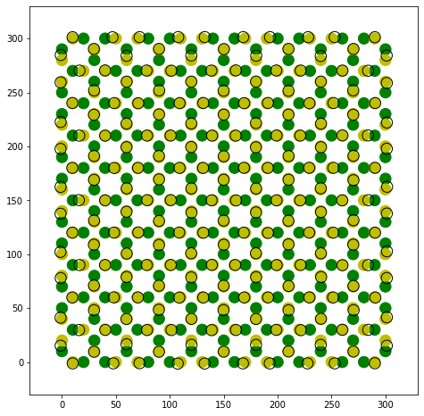

Read colloidal ice from simulation or experimental data¶
This notebook explores options for reading simulations and experiments, and using them to define a colloidal_ice object.
[1]:
# This only adds the package to the path.
import os
import sys
sys.path.insert(0, '../../../')
import icenumerics as ice
import matplotlib.pyplot as plt
%matplotlib inline
[2]:
ureg = ice.ureg
[3]:
sp = ice.spins()
sp.create_lattice("square",[10,10],lattice_constant=30*ureg.um, border="closed spin")
[4]:
particle = ice.particle(radius = 5.15*ureg.um,
susceptibility = 0.0576,
diffusion = 0.125*ureg.um**2/ureg.s,
temperature = 300*ureg.K,
density = 1000*ureg.kg/ureg.m**3)
trap = ice.trap(trap_sep = 10*ureg.um,
height = 10*ureg.pN*ureg.nm,
stiffness = 6e-4*ureg.pN/ureg.nm)
col = ice.colloidal_ice(sp, particle, trap, height_spread = 0, susceptibility_spread = 0.1)
col.pad_region(30*ureg.um)
[5]:
world = ice.world(
field = 20*ureg.mT,
temperature = 300*ureg.K,
dipole_cutoff = 200*ureg.um)
[6]:
%%time
col.simulate(world,
name = "test",
include_timestamp = False,
targetdir = r".",
framerate = 100*ureg.Hz,
timestep = 10*ureg.ms,
run_time = 60*ureg.s,
output = ["x","y","z"])
[<icenumerics.magcolloids.magcolloids.parameters.particles object at 0x8214891d0>]
CPU times: user 55.6 s, sys: 2.16 s, total: 57.8 s
Wall time: 1min 22s
[7]:
f, (ax2) = plt.subplots(1,1,figsize = (8,8))
col.display(ax2)

What happens when a colloid is exactly at zero?¶
It is possible, due to rounding errors, to find a colloid exactly in the center of the trap. In order not to lose the direction, the program will preserve the last direction.
[8]:
col.trj.loc[(5999,220),["x","y"]] = col.trj.loc[(5999,440),["x","y"]]
[9]:
col = col.set_state_from_frame(-1)
[10]:
f, (ax2) = plt.subplots(1,1,figsize = (8,8))
col.display(ax2)
plt.plot(col.trj.loc[(5999,220),"x"],col.trj.loc[(5999,220),"y"],'.',color="red")
[10]:
[<matplotlib.lines.Line2D at 0x822693b00>]